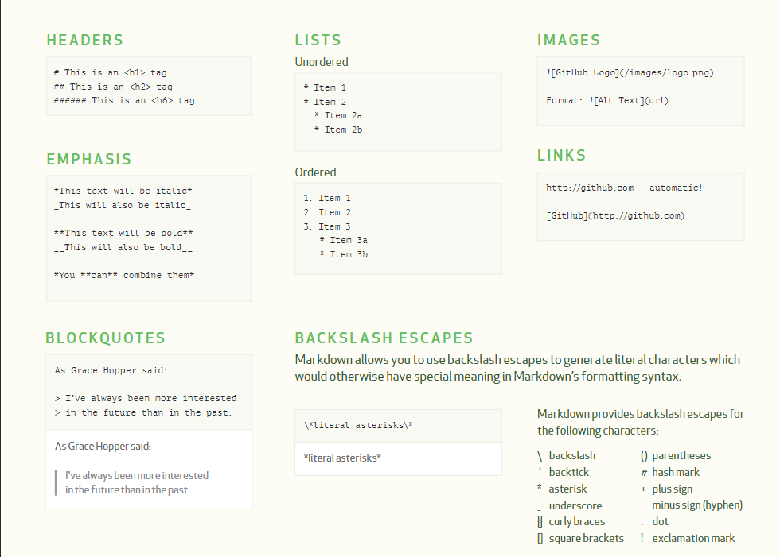
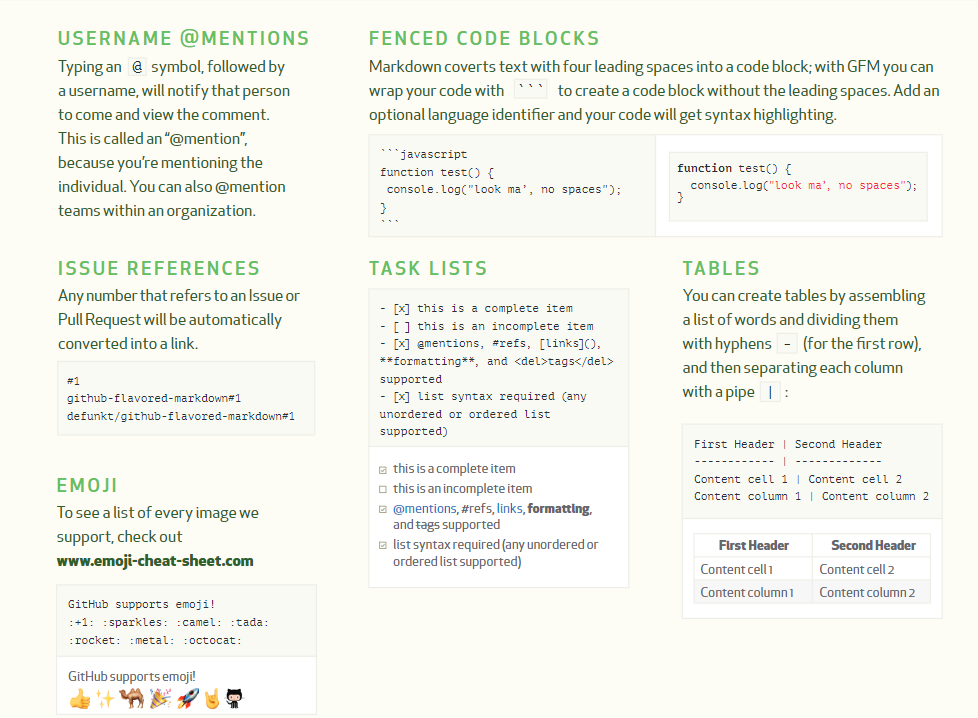

thinking-about-multiple-inheritance
2019-10-23
Java


1 | cd blog |
注意： 如果有需要，可以编写.gitignore文件，去除掉不想要版本控制的文件或目录，例如生成的中间文件、依赖等。
1 | git clone https://github.com/chenxi65535/hexo-blog.git |
如果本地已经有GitHub的用户信息，直接就能够进行push和pull操作了。Windows一般将GitHub的凭据保存在凭据管理器中。
1 | git config user.name |
或者
1 | git config --list |
有时候，我们在离开了IDE的情况下，需要独立运行Java程序，这时候我们就需要对其打包，将其打包为可执行的Jar文件。打包就是将我们编译或的class文件、资源、依赖等文件压缩至一个文件内，但是如果要保证Jar包可执行，我们就需要遵守一些规范。对于可执行这种场景，如果我们的Jar包中包含了第三方的依赖包，应该如何处理，我们针对两种情况进行说明：
打包步骤如下：
至此，打包完毕
但是，依赖的问题没有得到解决，如果我们添加了依赖，在运行该jar包时，会抛出NoClassDefFoundError的异常。即使在Jar中添加了依赖包，在Manifest中配置了Class-path，问题依然没有得到解决。原因是Java不会从我们打包的Jar包中寻找依赖，而是基于Jar包本身的路径为基准寻找依赖。
此时，最简单的解决办法是，在Manifest中填入Class-Path: lib/commons-codec-1.3.jar
调整文件的目录结构如下:
packaging-demo.jar
lib/
commons-codec-1.3.jar
再次执行java -jar packaging-demo.jar，运行成功。
但是，这个并不满足我们的目标，我们的需求是，创建一个可执行的Jar包，这个Jar包需要是以独立文件的形式存在的。
在观察了maven-assembly-plugin的工作模式后，我们发现其工作的原理是将所依赖的Jar包的内容解压出来，打包进我们的可执行Jar包中。
由此我们也可以得知，在我们import依赖类的时候，java首先是在Jar包内的根目录直接搜索class文件，而非直接放置进去的jar文件。然后java会从classpath中进行寻找，如果无法找到依赖类的定义，就会抛出NoClassDefFoundError异常。
单纯的打包，我们添加配置即可
1 | <packaging>jar</packaging> |
如果需要将依赖也打包到Jar中，可以使用maven-assembly-plugin插件。该插件的目的是，可以在Maven Lifecycle中的package phase中，添加除class文件外的其他信息。
1 | <build> |
IDEA对于Maven项目会将其引入，自动设置JDK版本，依赖等内容，因此需要在Maven中指定这些信息。
1 | <properties> |
由于近期项目中需要编写一个认证来源的SDK，初步的思路是从so文件入手，类似于移动端中所用到的技术，将关键逻辑放置于动态链接库中，防止被攻击者反编译。这篇文章记录了JNI的新手上路历程,展示了创建jni bridge的关键步骤。
编写作为Native库的接口类
1 | package me.chenxi65535.demo; |
JNI的链接是需要遵从一定的命名规范的，如果接口名与native函数原型无法对应，否则都会抛出UnsatisfiedLinkError的异常。为了方便及避免错误，我们使用JDK自带的功能来帮我们生成定义了包含native实现所需函数原型的头文件。
1 | # Compile |
1 | # pass a -h flag to javac that tells it which directory to write the native headers to |
如果没有选择自动生成头文件，那么一定要注意函数原型能否对应上。
1 | /* DO NOT EDIT THIS FILE - it is machine generated */ |
包名也是包含在函数原型中的，这一点需要注意
根据先前生成的函数原型，实现我们需要的功能即可
1 |
|
完成native实现后，我们需要将其编译为一个动态链接库文件，在Linux系统中为so文件。
1 | gcc -shared -O3 -I/usr/include -I/usr/lib/jvm/java-8-openjdk/include/ -I/usr/lib/jvm/java-8-openjdk/include/linux/ me_chenxi65535_demo_HelloNative.c -o HelloNative.so |
注意：
-shared为必填flag，标识需要创建动态链接库。在mac系统中，为-dynamiclib。-Oflag可以设置优化级别。-O3意味着optimization more for code size and execution time。$JAVA_HOME/include$JAVA_HOME/include/<platform>我们编写一个test类来运行native方法：
1 | package me.chenxi65535.demo; |
运行该类，控制台输出Hello Native World!。
注意：System.load()和System.loadLibrary()是两个不同的方法，load()需要提供绝对路径，loadLibrary("HelloNative")实际寻找的路径为java.library.path中名称为libHelloNative.so的文件。